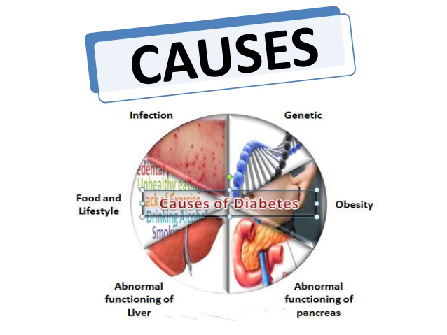
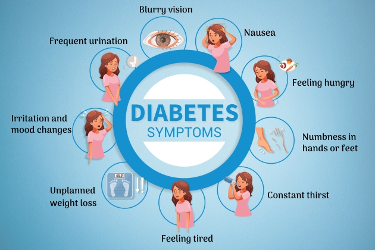
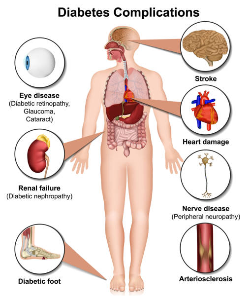
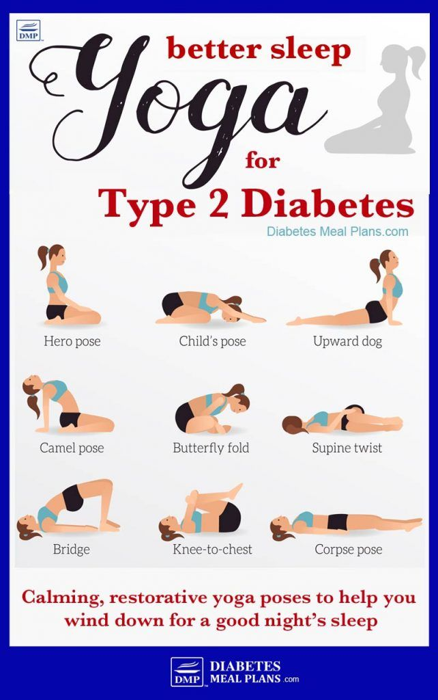

Understanding Diabetes

Causes
- Genetics – Family history increases risk.
- Obesity – Excess body fat affects insulin use.
- Poor Diet – High sugar and refined carbs.
- Lack of Exercise – Reduces insulin sensitivity.
- Hormonal Disorders – Like PCOS or Cushing’s syndrome.

Symptoms
- Frequent urination – Increased thirst and dehydration.
- Excessive hunger – Even after eating.
- Fatigue – Low energy due to glucose imbalance.
- Blurred vision – Due to high blood sugar.
- Slow healing – Wounds take longer to recover.

Effects
- Kidney Damage – Diabetic nephropathy.
- Nerve Damage – Tingling or numbness in limbs.
- Eye Problems – Diabetic retinopathy or blindness.
- Heart Disease – Increases risk of heart attack.
- Foot Problems – Infections, ulcers, amputations.

Prevention & Cure (Ayurveda)
- Herbal Support – Use herbs like Gurmar, Amla, and Fenugreek.
- Satvik Diet – Avoid sugar; eat whole grains, veggies, and legumes.
- Lifestyle & Yoga – Practice yoga like Dhanurasana and Kapalbhati.
- Detox Therapies – Panchakarma and Virechana help in sugar control.
- Mind-Body Balance – Use meditation and stress control techniques.